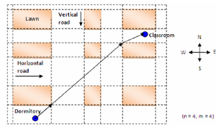

Sophia is a student. Every day she goes to class from her dormitory to the classroom. Sophia likes sleeping and she always gets up late, so she wants to know what the shortest path is.
The campus of the university is divided into several blocks. The picture below shows the campus. Each block is a lawn and you are not allowed to cross them. Sophia starts from her dormitory to classroom. The dormitory and classroom are 2 points in the map. Please look at the following graph for further clarifications.

The input consists of several test cases. Each case begins with two numbers n
, m
(0 < n, m 25)
, the number of horizontal roads and vertical roads, respectively. Then one line consists of 4 integer numbers
x0, y0, x1, y1
, means the dormitory's location is
(x0, y0)
and the classroom's location is
(x1, y1)
. Then two lines follow. The first line consists of 2n
integer numbers, the y
coordinates of each horizontal road's lower side and upper side from south to north. The second line consists of 2m
integer numbers, the x
coordinates of each vertical road's left side and right side from west to east. The campus always has at least one vertical road and at least one horizontal road. The classroom and dormitory will always in the campus and won't appear inside any lawn. All coordinates will be in the range (-100000, 100000), and the width of each road is greater than 0. N = 0
, M = 0
indicates the end of input file.
25)
, the number of horizontal roads and vertical roads, respectively. Then one line consists of 4 integer numbers
x0, y0, x1, y1
, means the dormitory's location is
(x0, y0)
and the classroom's location is
(x1, y1)
. Then two lines follow. The first line consists of 2n
integer numbers, the y
coordinates of each horizontal road's lower side and upper side from south to north. The second line consists of 2m
integer numbers, the x
coordinates of each vertical road's left side and right side from west to east. The campus always has at least one vertical road and at least one horizontal road. The classroom and dormitory will always in the campus and won't appear inside any lawn. All coordinates will be in the range (-100000, 100000), and the width of each road is greater than 0. N = 0
, M = 0
indicates the end of input file.
For each test case, you should print only one line consists of the length of the shortest path you found in the format as indicated in the sample output
(with accuracy 10-4
).
2 2
-3 -3 3 3
-5 -3 3 5
-5 -3 3 5
0 0
Case 1: 12.0000